Insight 1
After the first Democratic debate, Andrew Yang slowly but steadily got the votes. The thrid dempcratic debate witnessed the highest approval of Yang, even he only got 7.8 minutes' speaking. But the approval rate did not last long.
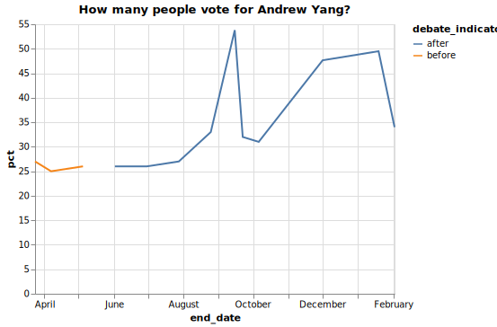After the first Democratic debate, Andrew Yang slowly but steadily got the votes. The thrid dempcratic debate witnessed the highest approval of Yang, even he only got 7.8 minutes' speaking. But the approval rate did not last long.
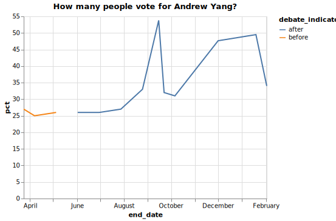Bernie Sanders got higher approve rate on the polls done by the methodology of IVR/Online.
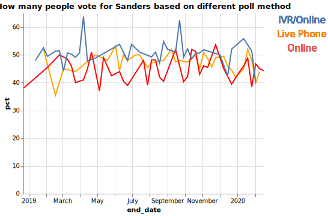With two alternative visualization
Donald Trump's approval rate was steadily going up after the Democratic Debate, and got the highest approval percentage in Feburary 2020 after Iowa caucus.
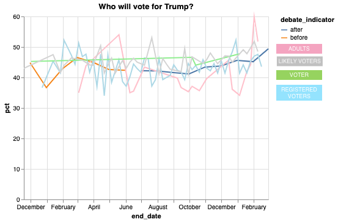 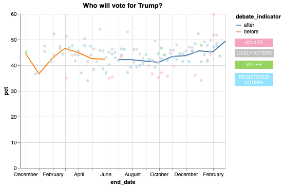 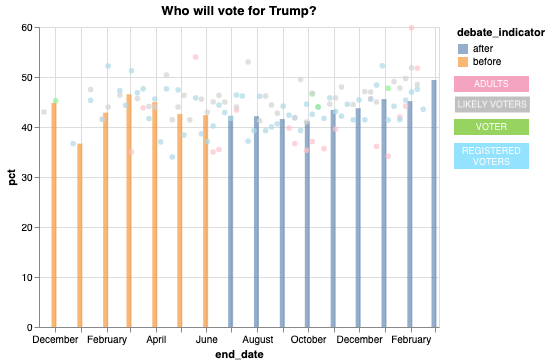With two alternative visualization
In the Swing state of Michigan and Wisconsin, for most of the time, Biden's approval rate is higher than Trump's.
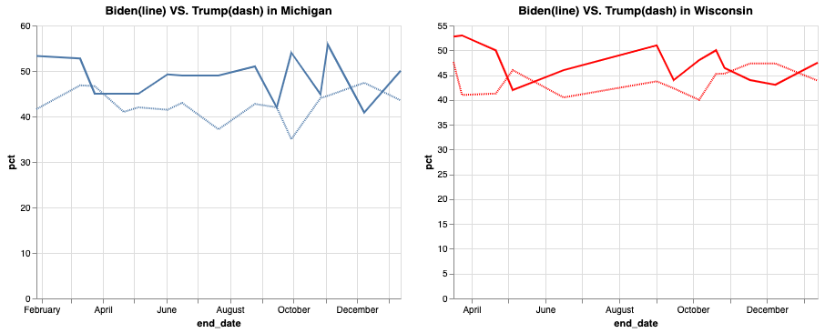 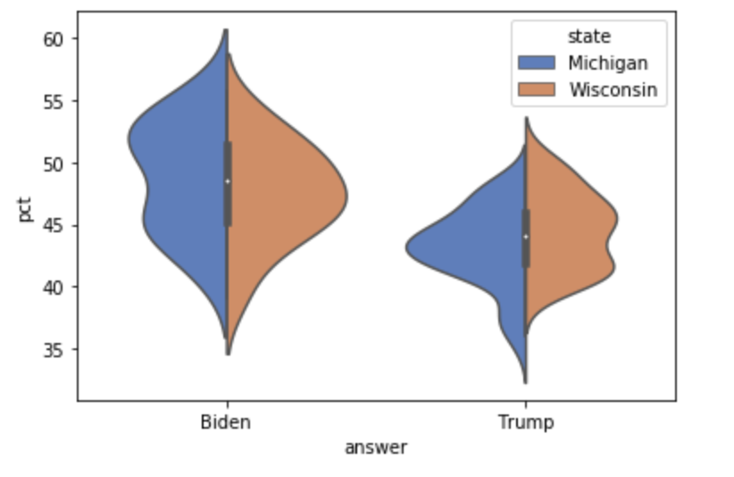 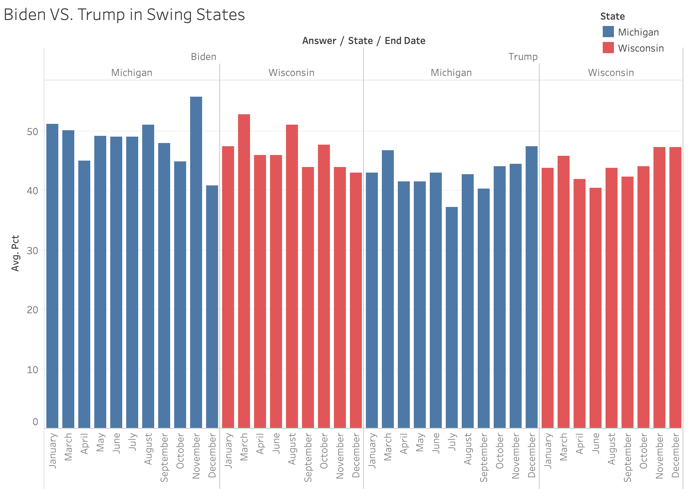With two alternative visualization
For the state of California, all the democratic candidates got higher approval percentages than Trump.
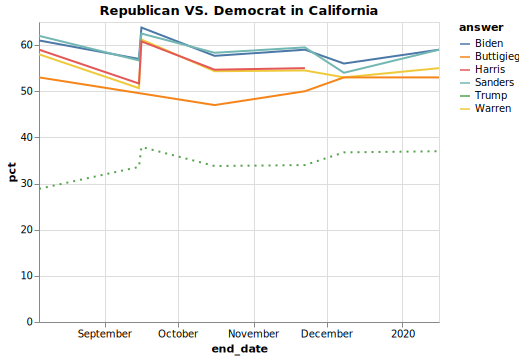 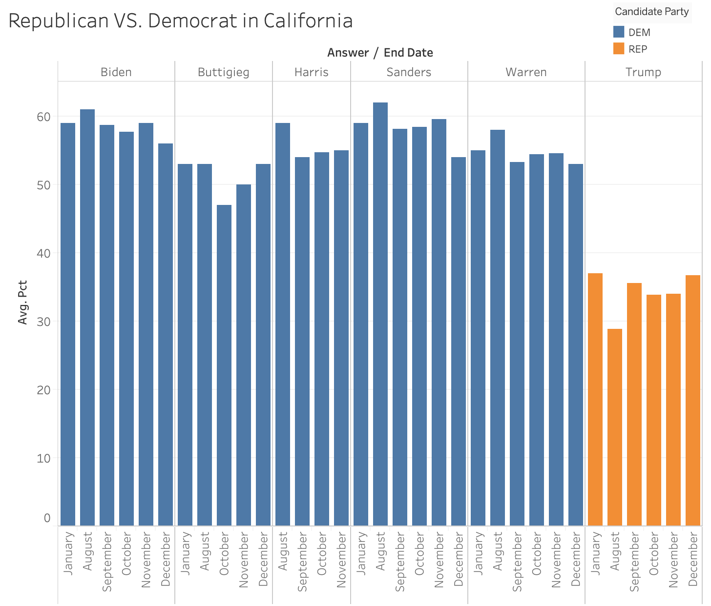